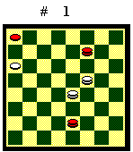
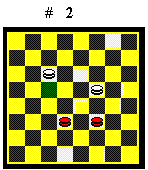
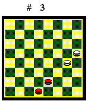
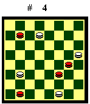

TEORIA DELLA MOSSA
Si dice che un colore ha l'opposizione
favorevole (o la mossa) se, quando i pezzi avversari si fronteggiano, l'altro
è costretto a indietreggiare. Nei finali, quando sono presenti pochi
pezzi, l'opposizione favorevole può far guadagnare tempi e spazi
decisivi determinando il risultato, come si vedrà nello studio dei
finali teorici.

Nella posizione del Diagramma 1, chi deve muovere è costretto ad indietreggiare, altrimenti perde un pezzo. Pertanto, chi muove non ha la mossa.
Nella posizione del Diagramma 2, se muove il Bianco può giocare 10-14, poi il Nero deve indietreggiare. Se muove il Nero può giocare 22-18, poi il Bianco deve indietreggiare. Pertanto, chi muove ha la mossa.Per il calcolo della mossa in posizioni più complesse conviene dividere mentalmente i pezzi, indipendentemente dal colore, in coppie. Quindi distinguere le coppie in pari o dispari a seconda che il numero di caselle che separano i due pezzi sia rispettivamente pari o dispari. Se si ha un numero dispari di coppie pari, chi muove ha la mossa; se si ha un numero pari di coppie pari, chi muove non ha la mossa. Le coppie dispari sono ininfluenti. Visto che la divisione dei pezzi in coppie è arbitraria, conviene fare scelte che semplifichino il calcolo, ad esempio formando quante più coppie dispari è possibile.
Nella posizione del Diagramma 1 si può scegliere di formare le coppie (1-9), (7-15) e (19-27). Sono tutte coppie dispari perché i due pezzi di ogni coppia sono separati da una casella. Quindi si hanno zero coppie pari: chi muove non ha la mossa.
Ma si possono fare scelte alternative e, per esempio, formare le coppie (1-9), (7-27) e (15-19). La coppia (1-9) è dispari. La coppia (7-27) è pari perché i due pezzi sono separati da quattro caselle. La coppia (15-19) è pari perché i due pezzi sono separati da zero caselle. Quindi si hanno due coppie pari: chi muove non ha la mossa.

La mossa si inverte con un cambio. Portare "a spasso" pezzi per la damiera non ha alcun effetto. Se nella posizione del Diagramma 3 deve muovere il Bianco, non ha la mossa, ma può acquistarla con il cambio 20-23.

Con il baratto invece la mossa a
volte si inverte, a volte no. Se nella posizione del Diagramma 4
deve muovere il Bianco, ha anche la mossa. Con il baratto 31-27 (o 31-28)
la mossa non si inverte. Invece con il baratto 6-2, 29-25 la mossa si inverte
e passa al Nero.